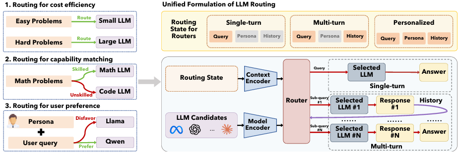
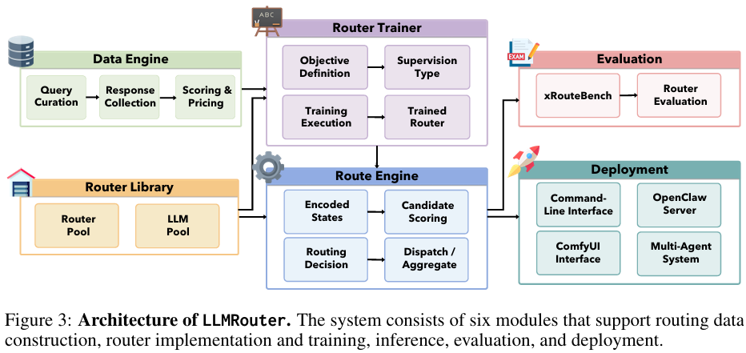

“LLMRouter: Unified Infrastructure for Developing, Evaluating, and Deploying LLM Routers” (2026), arXiv:2608.06867
LLMRouter is interesting because it combines three different goals
- Cost efficiency
- Capability matching
- User preference
...in a unified framework
- Single-turn
- Multi-turn
- Personalized

LLMRouter treats routing as full infrastructure, not just a scoring function: a Data Engine builds training data, a Router Trainer fits the routing model, a Route Engine scores and dispatches each request at inference time, and separate Evaluation and Deployment layers plug into existing serving stacks.
